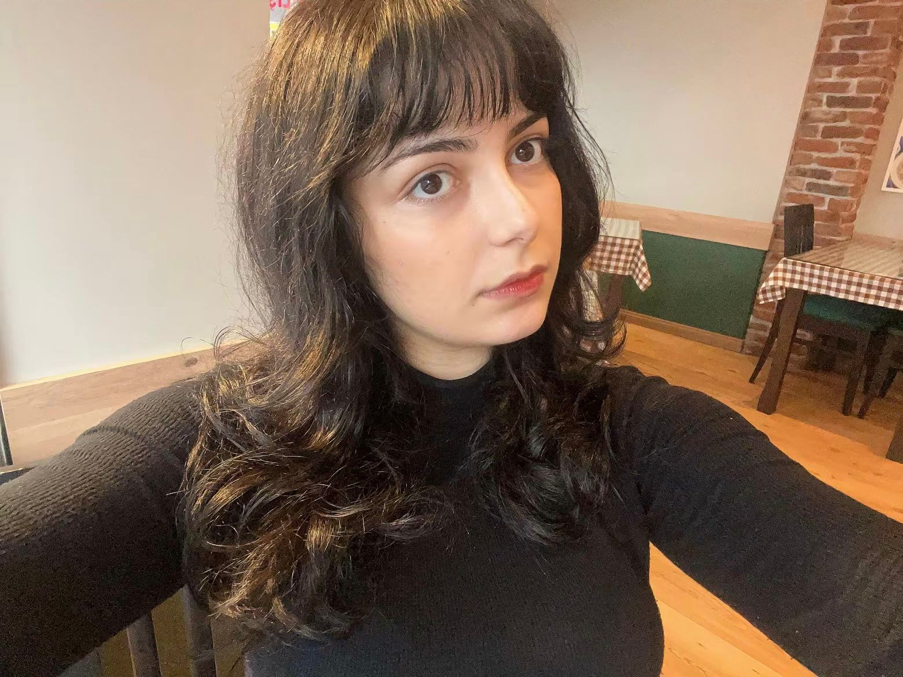
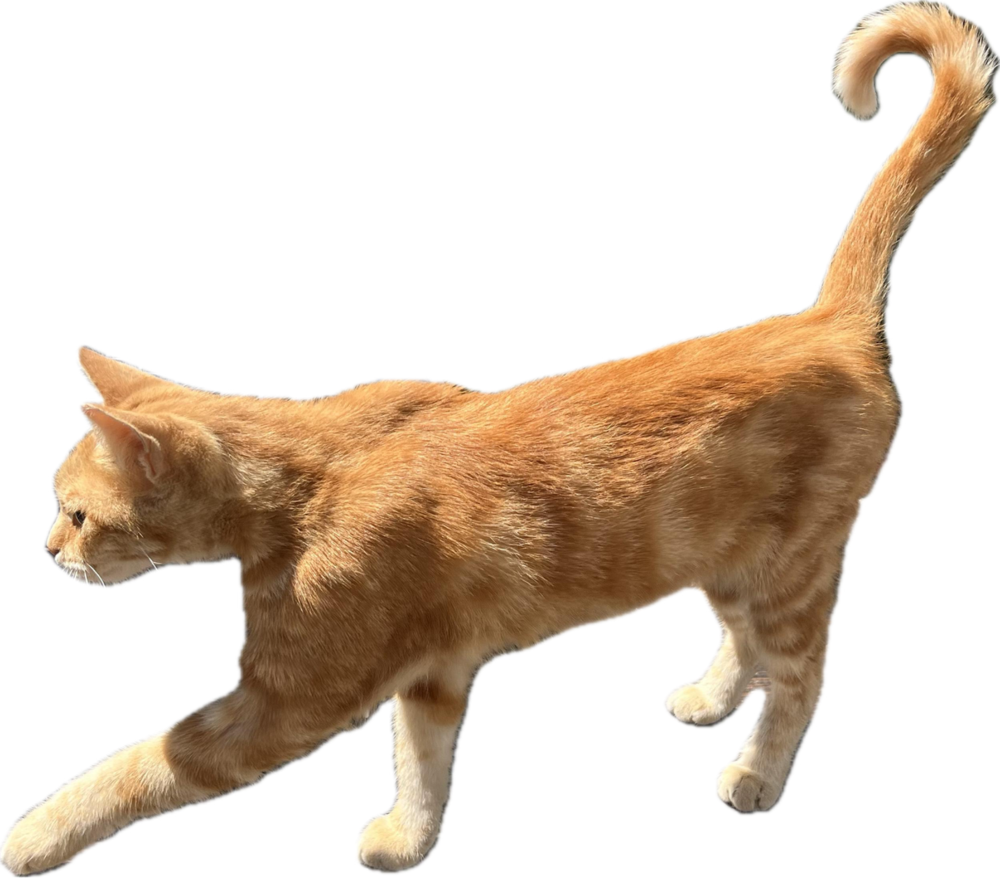
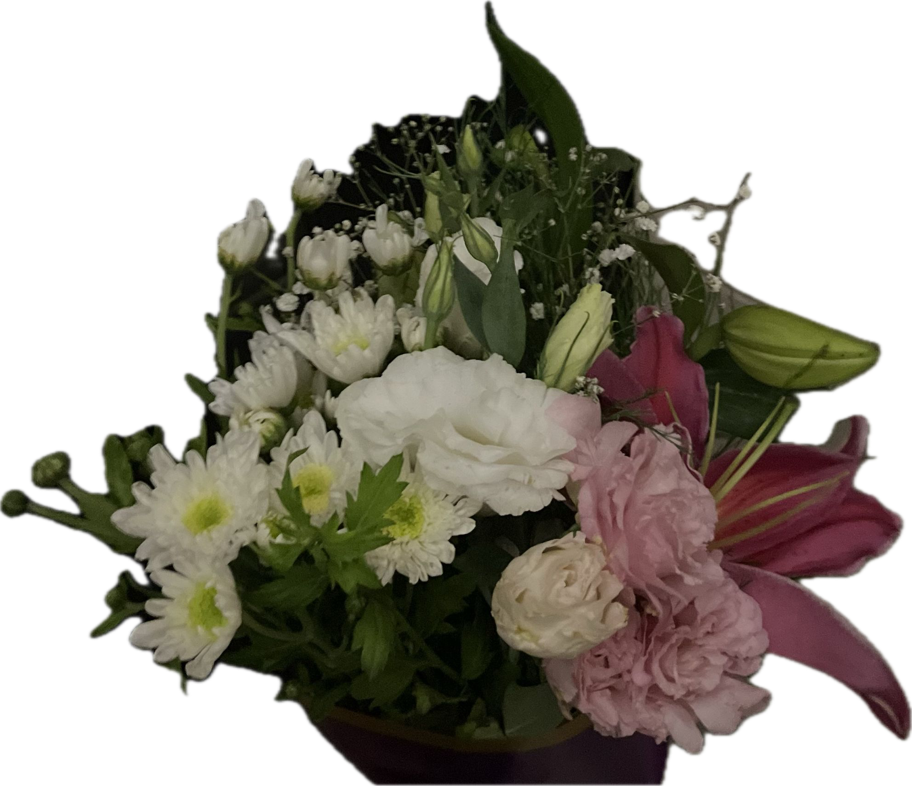
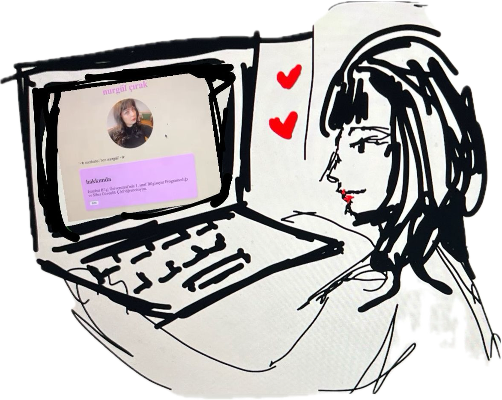
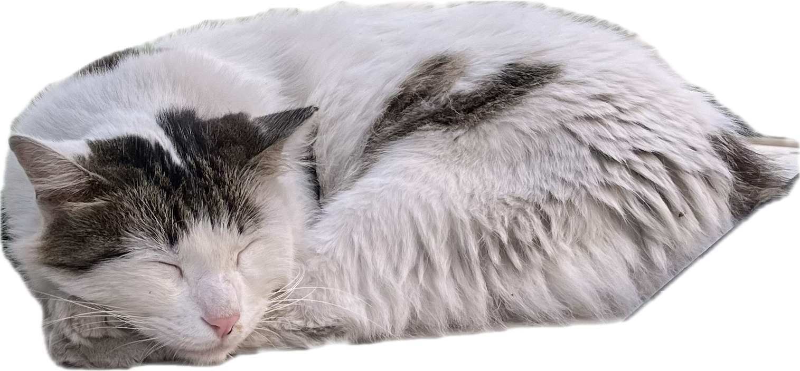
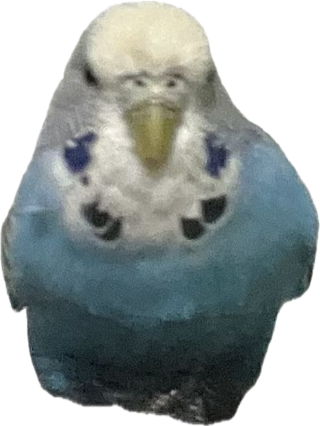
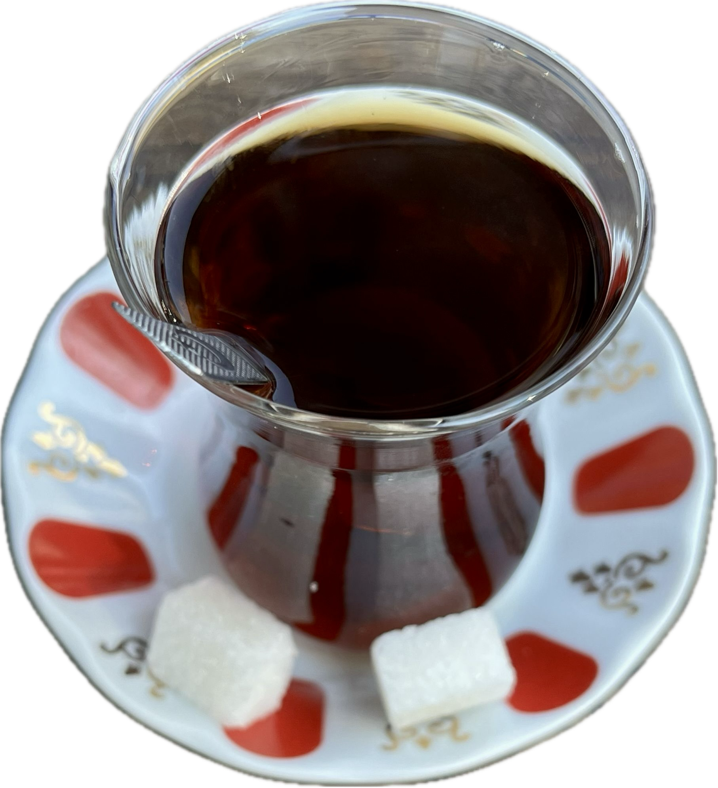

Web geliştirme
Web arayüzleri oluşturma ve temel etkileşimleri geliştirme.
bilgisayar programcılığı · 2. sınıf
Yazılım geliştirme, web teknolojileri ve dijital ürünlerle ilgilenen bir bilgisayar programcılığı öğrencisiyim. Öğrendiklerimi deneyerek, üreterek ve merak ettiğim konuların peşinden giderek geliştiriyorum.

that's me — nurgül


KISACA BEN
İstanbul Bilgi Üniversitesi'nde Bilgisayar Programcılığı 2. sınıf öğrencisiyim. Yazılım geliştirme, web teknolojileri, veritabanları ve yapay zekâ teknolojileri üzerine çalışmaya ilgi duyuyorum.
Teknik temelimi güçlendirirken problem çözme, hata ayıklama ve kullanıcı odaklı düşünme becerilerimi de geliştirmeye çalışıyorum. Benim için öğrenmenin en iyi yolu, bilgiyi küçük projelerle pratiğe dökmek.
profesyonel profilime göz at ↗ARAÇ ÇANTAM
Seviyemi abartmak yerine, ne bildiğimi ve neyi geliştirdiğimi açıkça göstermeyi tercih ediyorum.
Web arayüzleri oluşturma ve temel etkileşimleri geliştirme.
Programlama mantığı, algoritmalar ve uygulama geliştirme temelleri.
Veriyle çalışma ve geliştirme sürecinde kullanılan araçlar.
İşletim sistemleri ve bilgisayar ağlarına yönelik temel bilgi.
JavaScript · PHP · SQL · Linux · ağ teknolojileri


PROJE & DENEYİM
Yeni projeler ekledikçe bu alanı güncelleyeceğim. Şimdilik geliştirdiğim kişisel web sitesini paylaşıyorum.
Kendimi, teknik ilgi alanlarımı ve öğrenme sürecimi tanıtmak için HTML, CSS ve JavaScript kullanarak geliştirdiğim kişisel web sitesi.
GitHub'da kodlarımı incele ↗
one cup of tea closer to my goals.
BİRLİKTE ÜRETELİM
Staj, iş birliği veya teknoloji üzerine sohbet etmek için benimle bağlantı kurabilirsin.